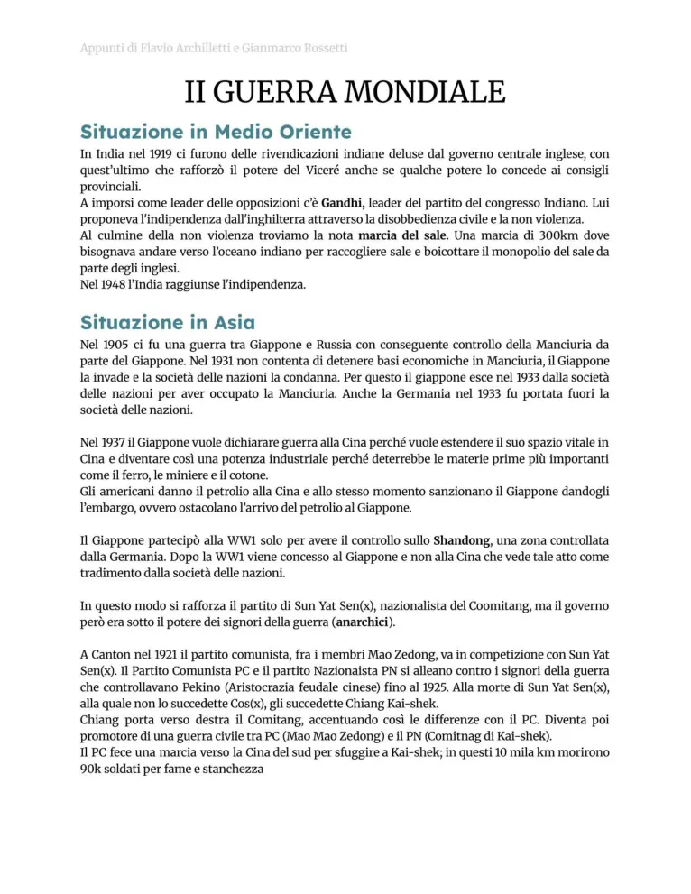
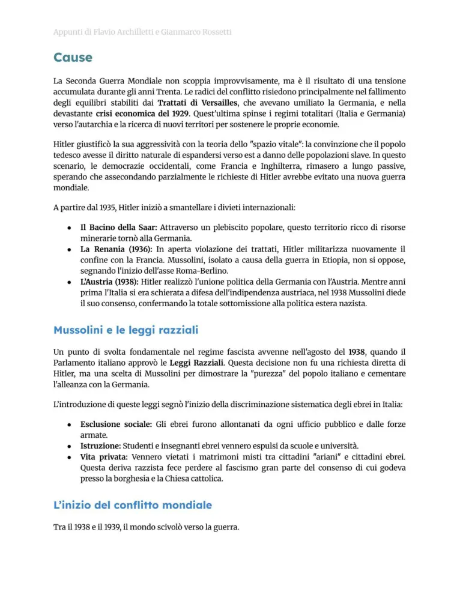
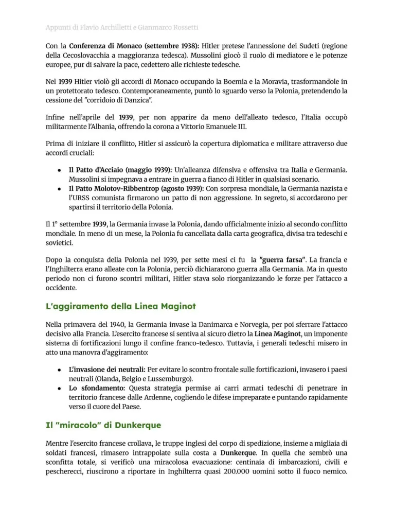
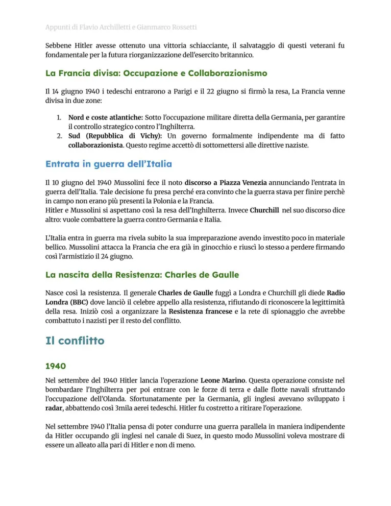
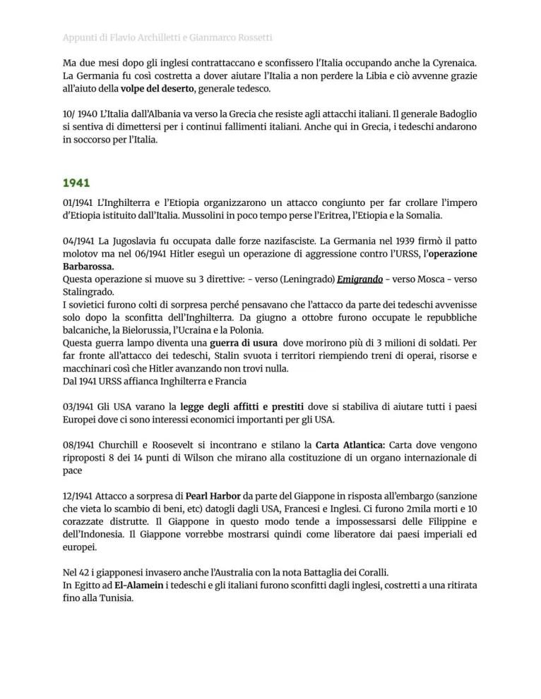
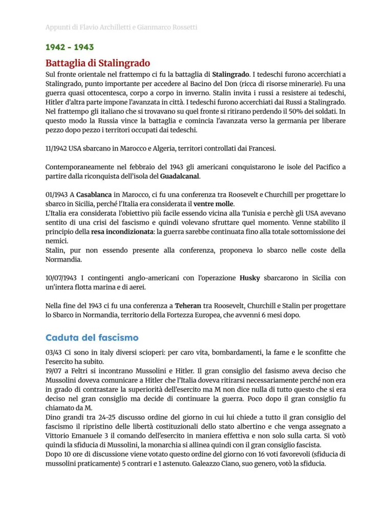
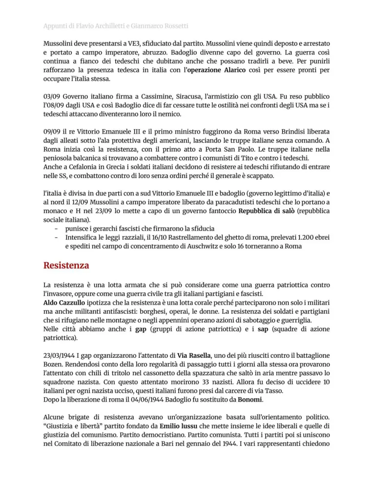
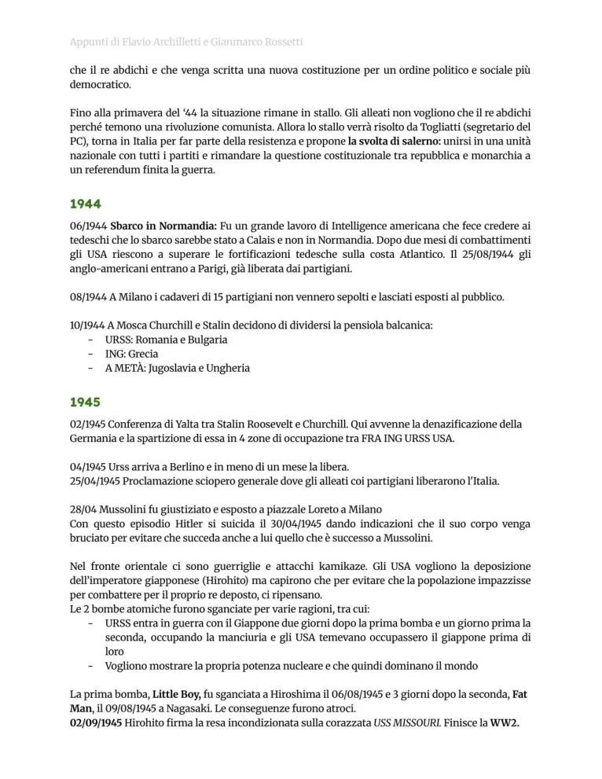
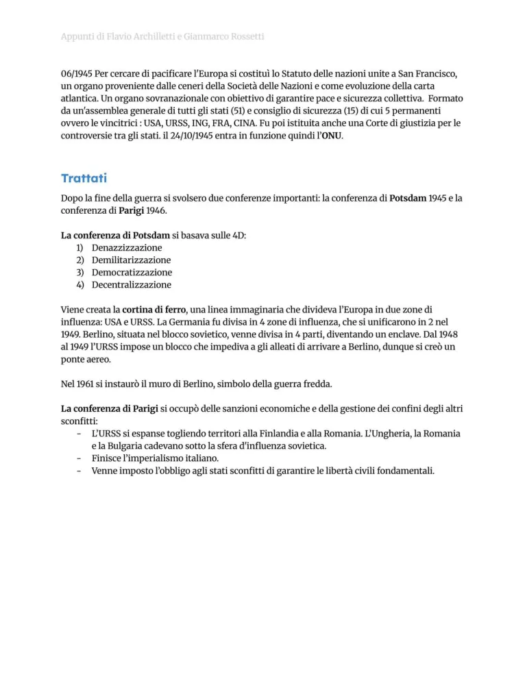
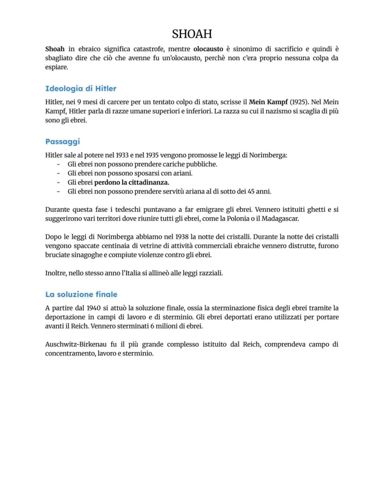

Seconda guerra mondiale e Shoah
Cause, fasi del conflitto, svolte militari, Resistenza, caduta del fascismo, Shoah e fine della guerra.
Studio guidato
Cause
La Seconda guerra mondiale nasce dall’aggressività nazifascista, dal revisionismo contro Versailles, dalla debolezza della Società delle Nazioni, dall’appeasement e dalle mire espansionistiche di Germania, Italia e Giappone.
Inizio e allargamento
Il 1 settembre 1939 la Germania invade la Polonia. Seguono guerra lampo, caduta della Francia, battaglia d’Inghilterra, ingresso dell’Italia, invasione dell’URSS e attacco giapponese a Pearl Harbor, che porta gli USA in guerra.
Svolte
Tra 1942 e 1943 cambiano gli equilibri: Midway nel Pacifico, El Alamein in Africa, Stalingrado sul fronte orientale. In Italia nel 1943 cadono Mussolini e il fascismo, nasce la Resistenza contro occupazione tedesca e Repubblica sociale.
Fine
Lo sbarco in Normandia nel 1944 apre il fronte occidentale. Nel 1945 la Germania si arrende. Gli USA sganciano bombe atomiche su Hiroshima e Nagasaki; il Giappone si arrende e la guerra termina.
Shoah
La Shoah è lo sterminio degli ebrei d’Europa e di altri gruppi perseguitati dal nazismo. Dalle leggi discriminatorie si passa a ghettizzazione, deportazioni, campi di concentramento e sterminio, fino alla Soluzione finale.
Parole chiave
Pagine originali dal file
Le immagini sotto mantengono il riferimento diretto alle pagine del PDF usato come base del sito.










Quiz finale
Devi rispondere correttamente a tutte le 12 domande. Se ne sbagli anche solo una, il quiz si azzera e ricomincia da capo.